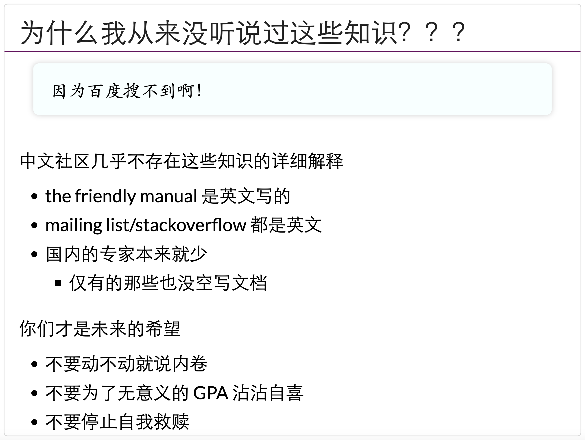

<!DOCTYPE html>
<html lang="en">
  <head>
    <meta charset="utf-8" />
    <meta name="viewport" content="width=device-width, initial-scale=1.0, maximum-scale=1.0, user-scalable=no" />

    <title>YUNA Missing Lessons</title>
    <link rel="shortcut icon" href="./favicon.ico" />
    <link rel="stylesheet" href="./dist/reset.css" />
    <link rel="stylesheet" href="./dist/reveal.css" />
    <link rel="stylesheet" href="./dist/theme/simple.css" id="theme" />
    <link rel="stylesheet" href="./css/highlight/github.css" />

    <link rel="stylesheet" href="./assets/custom.css" />

  </head>
  <body>
    <div class="reveal">
      <div class="slides"><section  data-markdown><script type="text/template">
<div class="middle center">
<div style="width: 100%">

# YUNA Missing Lessons

<hr/>

Session #1
<br />

By [@reecho-tsai](https://github.com/reecho-tsai)

<br /><br />

credit: [@TonyCrane](https://github.com/TonyCrane) & [@45gfg9](https://github.com/45gfg9)


</div>
</div>


</script></section><section ><section data-markdown><script type="text/template">

<div class="middle center">
<div style="width: 100%">

# Part.1  大学之道

</div>
</div>


</script></section><section data-markdown><script type="text/template">

## 大学之道

> 大学之道，在明明德，在亲民，在止于至善。
> 知止而后有定，定而后能静，静而后能安，安而后能虑，虑而后能得。
> 物有本末，事有终始。知所先后，则近道矣。

- 乱七八糟的杂事、水课多
- 学习的方向不明确、坚持不下去
- 玩也玩不好、学也学不成
- 对自己前途的「统计概率性忧虑」
  <br />
  <br />

  **无负今日。**
</script></section><section data-markdown><script type="text/template">

## 大家都在同一个 ysu…

- 人在做、天在看；走路的人总能到达远方。
- 但是你不能横向走、甚至于倒着走。
- 那些不愿意走的人，对你没有对比和统计的意义、更不要成为你的拖累。
- 要想一直走下去，需要一个良好的状态：身体和心理上。
- 尝试了可能没希望，不尝试绝对没希望。
- 合理分配你的精力。
- 构建稳定的社交体系、稳定的情感价值来源，尽早防控心理疾患，必要时寻求专业帮助。
- 多去看看大江大海、大河大山，*真正*接纳自己，随遇而安、接受当下、活着就行。

</script></section><section data-markdown><script type="text/template">

## 他山之石

- 南京大学[蒋炎岩](https://jyywiki.cn/) 2020 秋《计算机系统基础》「链接与加载选讲」
    - https://jyywiki.cn/ICS/2020/slides/8.slides.html#/4/1

<div style=" margin-top: 10px; margin-right: 10px;" markdown="1">


<br/>

- “你们有没有想过为什么你们上的这么痛苦”
- “很长时间里面你们都被困在墙内”
- “你们 missed 可能要比 MIT 的那个还要再多一点”
- “另外一个就是你们的悲喜在很多情况下是在 GPA 上的”

</div>

</script></section><section data-markdown><script type="text/template">

## 在这门课程中你将有什么收获？

- 掌握一系列常用、好用的工具（包括 Git、Vim、Shell、Markdown 等）
- 增强 CS 专业技能，让你看起来更专业、更像一个 CS 人
    - 推荐阅读：[「如何让自己看上去、闻上去都像一个 CS 人」](https://zhuanlan.zhihu.com/p/539692975)
    - 树立起一个 CS 人的思维方式：
        - 学会自己解决问题、自己 debug
        - 学会探索计算机世界、广泛自学的方法
        - 构建一个属于自己、干净、高效的工作环境和工作流程
- 为将来更多计算机课程的学习打下坚实基础、打通道路
- 培养对 CS 的兴趣
- ...

</script></section><section data-markdown><script type="text/template">

## 你说的对，可是…

- 放弃任何幻想、时刻准备斗争
- 大一是最关键的一年！（bushi
    - 自由探索你感兴趣的方向，尽早确认
    - 确认了之后，一门心思做下去（进组等等，找学长学姐咨询，不一定跟本校）
    - 就业、保研、考研，早做打算。定下来保研就绝不放弃！
- 基础能力：打好底子
    - 你会用电脑吗？
    - 你在写软件，但你熟悉软件运行的环境吗？
    - 你懂的如何完善软件开发的流程吗？
    - 你懂的如何去获取相关资料吗？
 
 You need MissingLessons.

</script></section><section data-markdown><script type="text/template">
## 除了写代码之外…
- 让你的代码写的更流畅：
    - 一台流畅的计算机，与恰当的软件（ex.: 解压缩工具?）
    - IDE（继承开发环境）、编辑器（VSCode）等使用
        
        （和记事本、DevCpp等的区别？）
    - 熟悉你的代码将在哪里编译、运行（Linux）
    - 版本管理工具：Git
- 除此之外，让你的代码写的更正确：
    - 搜索引擎
    - ***英语能力***

这些东西加起来，你会发现你学的知识并「不多」，但竞争力远超他人。
</script></section></section><section ><section data-markdown><script type="text/template">

<div class="middle center">
<div style="width: 100%">

# Part.2 CLI / Shell

Command-Line Interface
</script></section><section data-markdown><script type="text/template">
## 是什么 & 分类
- 最原始但相对最快捷的交互方式，focus on program itself

- Linux: bash/zsh
- Windows: cmd/powershell

不同的终端对应不同的语法，考虑到后续授课需要和一般生产环境实际，我们采用在Windows上模拟的Git Bash操作。

[Git for Windows](https://gitforwindows.org/)
</script></section><section data-markdown><script type="text/template">
## 我是谁？我在哪？我要做什么？

- <ruby>**工作路径**<rp>（</rp><rt>Working directory</rt><rp>）</rp></ruby>，是当前 shell 所处的“位置”
    - 一定要时时刻刻知道自己“在哪里”
- 通常还要有的信息是当前正在操作的**用户**
    - 和权限有关，比如普通用户还是 `root` 等

<div class="fragment">

- 向其中输入命令然后回车，就可以执行命令
- 相对路径：从当前路径为根定位；绝对路径：以根目录为根定位
- `pwd` 获取当前路径
    - 可见 `~` 代表的就是当前用户的 “home” 目录
``` bash
$ pwd
  /home/reecho/project
$ gcc src/main.c -o main
```

</div>

</script></section><section data-markdown><script type="text/template">
## 路径相关命令

- pwd：获取当前路径 (print working directory)
- cd *path*：切换路径 (change directory)
    - *path* 可以是“相对路径”或者“绝对路径”
    - *path* 中 `~` 代表 home，`.` 代表当前路径，`..` 代表上一级路径
<br>

<div class="fragment">

如何从 `/home/45gfg9/` 进入 `/usr/bin/`
- 绝对路径：`cd /usr/bin`
- 相对路径：`cd ../../usr/bin`

</div>

<div class="fragment">

如何从 `/usr/` 进入 `/usr/games/`
- 绝对路径：`cd /usr/games`
- 相对路径：`cd games` 或者 `cd ./games`

</div>

</script></section><section data-markdown><script type="text/template">
## 文件/目录操作命令

- ls：列出当前路径下的文件和目录
    - `-a`：列出所有文件和目录，包括隐藏文件
    - `-l`：列出详细信息（文件权限，大小，修改时间，...）
- touch *file*：创建一个文件
- mkdir *dir*：创建一个目录
- cp *src* *dst*：复制文件或目录
    - -r：递归复制目录
- mv *src* *dst*：移动文件或目录（重命名）
- rm <em>files...</em>：删除文件
    - -r：递归删除目录；-f：强制删除
- find *path* -name *pattern*：在 *path* 下查找文件名匹配 *pattern* 的文件

<aside class="notes"><p>Windows Folder, *nix Directory</p>
</aside></script></section><section data-markdown><script type="text/template">
## 文件内容查看命令

- cat <em>files...</em>：输出与拼接文件
    - -n：带行号输出
- head *file*：输出 *file* 前 10 行
    - -n *lines*：输出 *lines* 行
- tail *file*：输出 *file* 后 10 行
    - -n *lines*：输出 *lines* 行
- more/less *file*：分页输出 *file* 内容
    - 空格翻页，回车下一行，q 退出
    - `less` 的功能更多，比如查找，更好的翻页等，用法见 `less --help`

</script></section><section data-markdown><script type="text/template">
<!-- .slide: data-background="lec1/background.png" -->

## 其他命令

- man：查看命令文档（manual）
- echo：输出字符串（常配合重定向/管道使用）
- whoami：获取当前用户
- whereis/which/whence：查找命令所在位置
- clear：清屏
- chmod：更改文件权限
- ps：显示进程信息
- date：获取当前日期时间
- kill：杀死进程（向进程发送信号）
- grep：搜索文件内容（常配合重定向/管道使用）
- diff：比较文件/目录内容
- curl：发送 HTTP 请求；wget：下载文件
- ...

</script></section><section data-markdown><script type="text/template">

<!-- .slide: data-background="lec1/background.png" -->

## 环境变量

- 记录了系统信息、运行参数的变量，可供程序读取
- 通过 echo $*var* 来输出某一环境变量的值，`env` 命令查看所有环境变量
- 一个关于环境变量和 shell 命令执行的例子
    - 🤔 命令是什么（例如 `ls`）？
    - -> 绝大部分都是可执行文件（`/bin/ls`），执行命令就是执行程序
    - 🤔 为什么 shell 可以只通过 `ls` 就找到 `/bin/ls` 这个可执行文件？
    - -> 在 `PATH` 环境变量中查找
    - 🤔 为什么一定要用 ./a.out 而不是 a.out 来执行程序？
    - -> 因为 .（即当前目录）并不在 `PATH` 变量中
</script></section><section data-markdown><script type="text/template">
## 设置环境变量
- export *var*=*value*：设置环境变量
        - 仅在当前执行的 shell 中有效。如何持久化？写入配置文件
- unset *var*：删除环境变量

<aside class="notes"><p>. is usually not in, and should not be in PATH</p>
</aside></script></section><section data-markdown><script type="text/template">
## Further Study
- vim
- 管道
- 配置文件
- 复杂命令看不懂？推荐 [explainshell](https://explainshell.com)
</div>
</div>
</script></section></section><section ><section data-markdown><script type="text/template">

<div class="middle center">
<div style="width: 100%">

# Part.3 Git Basis

Simple Intro of Git

</div>
</div>

</script></section><section data-markdown><script type="text/template">
## 什么是 Git？

- 分布式版本控制系统（DVCS，Distributed Version Control System）
    - 分布式：不需要联网，在自己的机器上就可以使用
    - 版本控制：记录、管理、回溯文件的修改历史
- 官网：https://git-scm.com/
- 历史？
    - Linus Torvalds 在开发 Linux 内核时由于当时使用的分布式版本控制系统 BitKeeper 对于免费版本加入了限制，于是开发了一款免费自由而且解决了历代 VCS 缺陷的版本控制系统 Git
    - 2005.4.7，[Git 开始自托管](https://github.com/git/git/commit/e83c51633)；九天后，[Linux 转为使用 Git 作为 VCS](https://github.com/torvalds/linux/commit/1da177e4c)

</script></section><section data-markdown><script type="text/template">
## How to access it?
你需要一些神奇的魔法哟～
``` bash
export https_proxy="http://127.0.0.1:10809"
```
</script></section><section data-markdown><script type="text/template">
## Git 模型（了解）

<div style="text-align: center;">

</div>

<p style="font-size: 0.5em; opacity: 0.7;">

credit: [@TonyCrane](https://github.com/TonyCrane) & [@45gfg9](https://github.com/45gfg9)

</p>
</script></section><section data-markdown><script type="text/template">

## Git 基础配置

- 创建一个本地 git 版本库
    - 通过 git init 指令
        - git init：让当前文件夹变成 git 仓库（创建 .git 文件夹）
        - git init *folder*：创建新的文件夹并初始化为 git 仓库
- git 账号配置
    - Why？多人合作区分用户/让 GitHub 能够识别出你
    - 全局配置：
        - git config --global user.name "*name*"
        - git config --global user.email "*email*"
    - 针对某一版本库专门设置：
        - 同前，不加 --global
</script></section><section data-markdown><script type="text/template">
<!-- .slide: data-background="lec2/background.png" -->

## 文件暂存


- 暂存区：已经修改、等待后续提交的文件
- 将文件加入暂存区：
    - git add *file/folder*
    - 只会添加修改过的文件
- 删除文件的几种情况：
    - 只在本地删除版本库中不存在的文件：rm
    - 同时删除本地和版本库中的文件：git rm / 先 rm 再 add
    - 将一个已暂存的新文件取消暂存：git rm --cached
- 重命名文件：git mv（等价于 mv + git rm + git add）
- 查看当前工作区和暂存区状态：git status
    - 文件三个类别：未跟踪（Untracked）、已追踪（Tracked）、被忽略（Ignored）

</script></section><section data-markdown><script type="text/template">
<!-- .slide: data-background="lec2/background.png" -->

## 关于 .gitignore

- 存放在版本库根目录下的名为 .gitignore 的文件，规定忽略哪些文件
- 语法
    - \# 开头的行为注释
    - \* 通配多个字符，\*\* 通配中间目录（有或无）
        - \*.c 匹配所有 C 文件，a/\*\*/b 匹配 a/b、a/x/b、a/x/y/b 等
    - / 开头只匹配根目录，否则匹配所有目录
    - ! 取消忽略
    - ...
    - [Git - gitignore Documentation](https://git-scm.com/docs/gitignore)
- git check-ignore -v *file*：查看某个文件是否被忽略，以及匹配的规则
- 常用语言的 .gitignore 模板：[github/gitignore](https://github.com/github/gitignore)

</script></section><section data-markdown><script type="text/template">
<!-- .slide: data-background="lec2/background.png" -->

## 提交更改


- 将暂存内容提交到本地仓库，生成一个新节点
    - git commit：默认编辑器编辑提交信息
    - git commit -m "*message*"
    - -a (--all) 自动暂存所有更改的文件
- 查看提交历史：git log
    - --oneline：每一个提交一行
    - --graph：显示分支结构
    - --stat：显示文件删改信息
    - -p：显示详细的修改内容
- 每个提交都有一个唯一的 sha-1 标识符（40 位十六进制数）
    - git show *id*：显示提交信息（*id* 不重复可以只写前几位）
- 检出之前的某一版本：git checkout *id*

</script></section><section data-markdown><script type="text/template">
## 分支

- 创建分支 git branch *name*：基于当前 HEAD
    - git branch *name* *id*：基于 *id* 提交
- 查看分支 git branch（带 -a 显示远程分支）
    - git show-branch 更详细
- 切换分支 git checkout *name*
    - git checkout -b *name*：创建并切换
- 内容比较
    - git diff *branch1* *branch2*：比较两个分支
    - git diff *branch*：比较工作区和分支
    - git diff：比较工作区和暂存区

</script></section><section data-markdown><script type="text/template">
## 远程版本库

- 想一想 Git 这样的分布式 VCS 如何实现协作
- -> 使用一个远程的“权威”版本库（remote repository）
- 远程版本库也是一个普通的 git 版本库
    - 通过 git clone *src* *dest* 可以将远程版本库克隆到本地
        - 会自动建立 remote 关联，可通过 git remote 管理
    - git push 会将本地的提交推送到远程版本库
        - 无法直接 push 到远程版本库检出的分支中
        - 因此远程一般使用裸版本库（--bare）
    - git pull 会将远程版本库的提交拉取到本地
        - 包含 git fetch 和 git merge 两个步骤

</script></section><section data-markdown><script type="text/template">

## 作业提交流程
``` bash
git pull
git checkout rpcai
vi /your/homework
git add .
git commit -m "add: liqi's picture"
git push origin rpcai
```

</script></section></section><section  data-markdown><script type="text/template">
<div class="middle center">
<div style="width: 100%">

# Thanks!

<hr />

追风赶月莫停留

平芜尽处是春山

祝：云程发轫 未来可期！

</div>
</div></script></section></div>
    </div>

    <script src="./dist/reveal.js"></script>

    <script src="./plugin/markdown/markdown.js"></script>
    <script src="./plugin/highlight/highlight.js"></script>
    <script src="./plugin/zoom/zoom.js"></script>
    <script src="./plugin/notes/notes.js"></script>
    <script src="./plugin/math/math.js"></script>
    <script>
      function extend() {
        var target = {};
        for (var i = 0; i < arguments.length; i++) {
          var source = arguments[i];
          for (var key in source) {
            if (source.hasOwnProperty(key)) {
              target[key] = source[key];
            }
          }
        }
        return target;
      }

      // default options to init reveal.js
      var defaultOptions = {
        controls: true,
        progress: true,
        history: true,
        center: true,
        transition: 'default', // none/fade/slide/convex/concave/zoom
        slideNumber: true,
        plugins: [
          RevealMarkdown,
          RevealHighlight,
          RevealZoom,
          RevealNotes,
          RevealMath.KaTeX
        ]
      };

      // options from URL query string
      var queryOptions = Reveal().getQueryHash() || {};

      var options = extend(defaultOptions, {"transition":"slide","transitionSpeed":"fast","center":false,"slideNumber":"c/t","width":1000}, queryOptions);
    </script>

    <script src="https://cdn.tonycrane.cc/heti/heti.js"></script>
    <script src="./assets/heti_worker.js"></script>

    <script>
      Reveal.initialize(options).then(() => {
        document.querySelector(".backgrounds").setAttribute("style", document.querySelector(".slides").style.cssText);
      });
      Reveal.on('overviewshown', event => {
        document.querySelector(".backgrounds").setAttribute("style", "");
      });
      Reveal.on('overviewhidden', event => {
        document.querySelector(".backgrounds").setAttribute("style", document.querySelector(".slides").style.cssText);
      });
      Reveal.on('resize', event => {
        document.querySelector(".backgrounds").setAttribute("style", document.querySelector(".slides").style.cssText);
      });
    </script>
  </body>
</html>